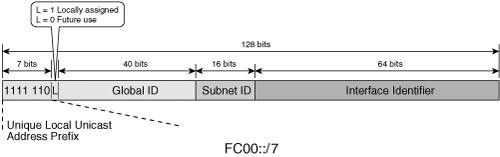
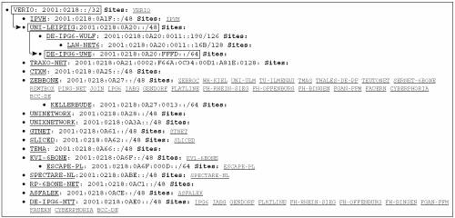

IPv6 AddressingAddressing is a fundamental aspect of the communication process between two or more entities. It provides the means to identify information sources and destinations while enabling dedicated resources to appropriately link the two groups together. This holds true whether we talk about the United States Postal Service or an IP network. The previous chapter briefly overviewed the IPv4 addressing structure and the challenges generated by a limited address space and its unwise use. The previous chapter also showed that the most compelling reason to adopt IPv6 is its addressing capabilities. It is natural, therefore, to make this topic a centerpiece of this IPv6 refresher. IPv6 Address RepresentationIf we set aside the troubles that result from unplanned address assignments, we still face the inevitable exhaustion of the IPv4 addressing space. The 32-bit long IPv4 address offers roughly 2 billion practically usable IDs. This set will not be able to withstand much longer the growing needs of a rapidly increasing number of users who require unique, globally reachable IP addresses. The natural solution is to increase the address space. The 128-bit long addresses were selected despite more aggressive proposals put forward during the development of IPv6. One might find 2128 or 340,282,366,920,938,463,463,374,607,431,770,000,000 addresses to be excessive. However, there was a time, not many years ago, when the same was thought of the IPv4 address space. On the other hand, one could argue that "the bigger the better." However, that line of reasoning should take into consideration the impact longer addresses have on system performance. A system using a 64-bit CPU, bus, or memory structure can process both the source address (SA) and destination address (DA) IPv4 addresses in one pass; whereas for IPv6 addresses, the same requires four passes. The IPv6 address can be represented as a string of 0s and 1s. This representation is a rather long string, but it is the way favored by computers. A hexadecimal representation shortens the 128-bit string to 32 characters, and it appeals to programmers. This representation is still long enough to make it hard to remember, so the string of 32 hexadecimal characters was given some structure and segmented into 8 groups of 4 characters (or 16 bits) separated by a colon (:). The decimal representation, like the one used by IPv4 that everyone is familiar with, was not adopted by IPv6. Two additional rules were introduced to further optimize the IPv6 address representation:
These rules must lead to a unique compressed representation of an address. For this reason, the consecutive-0s rule can be applied only once. It is incorrect to compress the address in the Figure 2-1 example to 2001::A1::1E2A. Someone looking at this address would not know whether the first :: stands for 2 or 3 groups of 16 zero bits. It is important to mention that : is a meaningful character in the Uniform Resource Locator (URL), where it separates the port number from the address. To avoid confusion, RFC 2732 suggests to enclose the IPv6 address in a URL in brackets, as shown in Example 2-1. Example 2-1. Using an IPv6 Address Within a URL
Note that the preceding address is shown with an optional port ID of 7878. IPv6 Address ArchitectureUnderstanding the IPv6 address representation enables us to discuss the IPv6 addressing architecture defined in RFC 3513. Three types of IPv6 addresses have been defined:
All of these address types were present in IPv4, along with broadcast addresses. Broadcast traffic was shown to be too resource intensive (during regular operation as well as during broadcast storms), so IPv6 ignores it and uses multicast addresses instead. IPv6 Unicast AddressThe fundamental function of a network is to provide unicast reachability for the hosts connected to it. All other services it provides rely on this unicast infrastructure. For these reasons, regardless of the IP version, unicast addresses play a critical role in any network. A flat, structureless address space would require routers to keep track of every single host's location, leading to scalability issues. This problem can be resolved through address aggregation, grouping multiple addresses under a common representation. To facilitate this process, IP addresses are segmented in a network portion that identifies a logical group of hosts and a host portion that identifies the host within the group. Hosts are aggregated under the same network or prefix. IPv4 demonstrated the constraints of a class-based addressing architecture, so IPv6 allows variable lengths for the network portion of its addresses. This approach requires the length of the prefix to be identified by adding /(number of bits) to the address. To maintain some parallelism between the addressing structure of the two IP versions, we used the IPv4 terminology host portion up to this point in the context of IPv6 addresses. IPv6, however, prefers to identify the interface of a host within a prefix rather than the host itself, which could have multiple interfaces. For this reason, the IPv6 addresses are segmented into a prefix or network portion and the interface identifier. Example 2-2 shows the network and interface identifier of an IPv6 address. Example 2-2. Identifying the Network and Interface ID of an IPv6 Address
RFC 3513 leaves no room for doubt about what the interface ID should be: "For all unicast addresses, except those that start with binary value 000, interface IDs are required to be 64 bits long and to be constructed in Modified EUI-64 format." The rule reveals the intent to maintain a globally unique character for the interface ID whenever possible. You can generate an interface ID in many different ways:
The network portion of the address is further refined in the case of IPv6 to integrate the concept of scope. The scope identifies a network domain, be it physical or logical. Being able to easily recognize the scope of an IP stream enables a network to better manage its resources by containing the traffic within the relevant domain and by applying policies relevant to that scope. The IP address is an essential element in making layer 3 forwarding decisions, so it should reflect the scope. Hosts would use the appropriate IP SA and DA for the scope of their communication. In IPv6, the unicast address format reflects three predefined scopes, as follows:
These scopes are hierarchical, as shown in Figure 2-2. The global scope is larger than the local (site) scope, which in turn includes the link scope. Figure 2-2. Unicast Address Scoping
The link and global scopes represent the two extreme cases, the smallest and the largest scopes. This distinction makes it easier to define them. RFC 3513 identifies a site-local scope that fits logically between the link and global scopes, although its definition is open for interpretation. A site can mean different things to different people. It can be a corporate network, a geographically constrained portion of a corporate network, or simply an administered domain within a corporate network. Because IPv6 addresses are structured based on scope, the ambiguity in site definition increases the complexity of IPv6 features and implementations. The original definition of the site scope also left the door open for the use of nonunique site-local addresses with their drawbacks (discussed later in the section). For these reasons, on March 20, 2003, the IETF IPv6 working group deprecated the site-local scope and the corresponding IPv6 address type. Figure 2-2 emphasizes this point. With habits being hard to break, especially when they prove to be operationally effective, the site-local scope and the site-local addresses did not go away quietly. Enterprises are accustomed to the safety and the advantages of a site-relevant, private addressing schemethe good old 10.x.y.z networkso they pressed for the development of an alternate solution to the site-local address. To meet these demands, the IETF IPv6 working group defined a new scope and address type called unique-local, preserving the concept of a site scope by using local in its name while emphasizing the "nearly" uniqueness of the addressing used within the site. Depending on an IPv6 node's complexity, it may or may not be aware of the scope information carried within the structure of a unicast address. Routers, however, must be aware of scoping to a certain degree because they have to keep traffic within the scope of its destination or source address. Because hosts typically communicate within more than one scope, interfaces have an address for each of the scopes used. Embedding the scope information into the network portion of the IPv6 address adds to its complexity. The subsequent sections discuss the details of the actual implementation of scopes in unicast addresses. Link-Local AddressesWhen an IPv6-enabled node comes online, each interface is provided by default with a layer 3 address that can be used for communication exclusively with other hosts on the same link. The local link defines the scope of these addresses, so packets that have them as SA or DA should never be routed to other links. These addresses are called link-local. They are used for on-link communication as well as link operation processes such as finding neighbors or routers. Figure 2-3 shows the structure of link-local addresses. A link-local address is made of a network portion of fixed format FE80::/10, where the high-level 10 bits are 1111 1110 10, and the subsequent 54 bits are 0. Figure 2-3. Link-Local Address StructureAs mentioned earlier, in IPv6 the interface identifier terminology is used instead of the host portion of the address, as shown in Figure 2-3. Example 2-3 shows the link-local address of an Ethernet interface with the interface ID generated based on the layer 2 MAC address. Example 2-3. Link-Local Address of an Ethernet Interface
Note From a layer 3 standpoint, the link is the elemental domain, implying it does not have an internal hierarchy. This explains the flat structure of the link-local addresses. It is important to note the fact that the link-local address, by its nature and format, is independent of the overall addressing scheme used in a network. This is consistent with its scope; the link-local address is not meaningful outside the link. For this reason, link local communication is not impacted during network renumbering. Its perennial property is leveraged by various protocols. Routers advertise their link-local address to all nodes on the link (see the "Neighbor Discovery" section later in this chapter), thus enabling them to communicate with a gateway regardless of the global unicast addressing scheme. This property of the link-local address is also actively leveraged in network design. Link-local addresses are used to identify a next hop whenever possible (a Border Gateway Protocol [BGP] neighbor, for example). Unique Local Unicast AddressThe concept of site scope can easily be mapped to that of a private administrative domain where addressing does not have to obey any global rules. The IPv6 addresses assigned to this scope as defined in RFC 3513 were called site-local, and they did not have to be unique. Their resemblance to the IPv4 private address space was a reminder of the drawbacks of such an approach (see RFC 3879). Some of the arguments against the use of site-local addresses are as follows:
In its drive to reestablish the original uniform and global structure of the Internet, IPv6 could theoretically live without the concept of a site. However, practical considerations dictate the need to identify scopes smaller than the global one. Enterprises in particular have an understandable fondness for identifying the boundaries of their networks. For these reasons, the deprecated site-local scope and addresses had to be replaced by a better-defined concept that could handle the concerns mentioned. The new concept is that of a unique-local scope and the corresponding unique-local addresses. Figure 2-4 shows the format of these addresses. The unique-local unicast addresses are fully standardized in RFC 4193. Figure 2-4. Unique-Local Unicast Address FormatThe portion of the unicast address space reserved for unique-local addresses (ULAs) is FC00::/7. Figure 2-4 shows the structure of a ULA with the following elements:
ULAs have to be used within the confines of a predefined domain that represents the local scope of these particular addresses. Traffic using ULAs as either SA or DA should not be allowed to cross the boundaries of the domain. ULAs make it easy to interconnect distinct local domains because there are no address collisions. Discontiguous site topologies are easier to manage. Routers connected to multiple sites can distinguish between them solely based on the address, thus avoiding the need for additional labels. These examples underline the benefits of the unique-local addressing versus the site-local addressing. Global Unicast AddressThe global unicast addresses are defined for use across the IPv6 Internet. They are globally unique and globally routable. The IPv6 addresses reserved for global scoped communication are identified by their high-level 3 bits set to 001 (2000::/3), as described in RFC 3587. IPv6's primary goal to provide plenty of globally accessible addresses is accomplished with the use of more address bits. The additional length could come at a cost by impacting routing processes through longer lookups, significantly larger routing tables, and larger routing updates (because many more networks are possible than with IPv4). Add to this the likely possibility that IPv6 networks are expected to have two or more coexistent addressing schemes and it becomes clear that IPv6 routers will need some help. One way to provide the needed relief is to implement and enforce strong rules on prefix aggregation. Such rules and policies would reduce the size of the routing table and the length of most of the prefixes populating them. A lot of effort has been placed on developing a flexible structure for the GUAs that facilitates easy aggregation. Several attempts were made, starting with RFC 2373, to enforce a granular address structure reflecting various levels of aggregation. In the end, it was decided to enforce proper aggregation through rigorous allocation policies and settle for a simpler address structure, as specified in RFC 3587 and shown in Figure 2-5. Figure 2-5. Global Unicast Address Structure
The components of the global unicast address are as follows:
Note Global unicast addresses are likely to coexist with other types of unicast addresses on a given interface. For example, users within an enterprise need to exchange information within the private intranet and with resources on the Internet. This means that a host's interface within a private network could be assigned two addresses, one to be used to communicate with other hosts and resources within the private network (possibly a unique-local) and another to be used to communicate with hosts and resources outside the private network (global unicast). For operational and management purposes, a correlation between the elements of the various address types on an interface might make sense. In this example, the GUA and the ULA might use the same interface ID or even the same subnet ID. Address allocation policies define the globally unique IPv6 address hierarchy. For this reason, it is important to briefly review them at this time. IPv6 Unicast Address AllocationIANA is in charge of managing the IPv6 address space. Table 2-1 summarizes the assignments, at the time of this writing, from the global unicast address pool.
IANA is currently allocating unicast addresses from all the IPv6 Internet domains identified in Table 2-1. After IPv4's transition from class-based to classless addresses, registries started to implement a hierarchical approach to address allocation. Larger address space is assigned to organizations (ISPs, governments, research networks, and so on), who in turn assign smaller pieces to their customers. This approach allowed for hierarchical routing, which is credited with a significant reduction in the size of the routing tables in core routers. A similar yet better-defined and stricter approach was adopted for IPv6. Earlier complex structuring of the IPv6 prefix in fields such as Top Level Aggregation and Next Level Aggregation has been replaced by the simpler format described in this section. IPv6 global unicast address hierarchy is enforced through IANA's allocation policy rather than fitting a predefined address format. Figure 2-6 exemplifies the address-allocation process for the 2001::/16 pool. IANA provides a prefix no longer than 32 bits to the Regional Internet Registries (RIRs). The current RIRs are as follows:
Figure 2-6. IPv6 Prefix-Allocation Process
The RIR allocates pieces of the prefix it received from IANA to National Internet Registries (NIRs; where present), to Local Internet Registries (LIRs), or Internet service providers (ISPs). These allocations are currently in the range of 32 to 35 bits in length. ISPs allocate prefixes to their customers (enterprises or residential users). As shown in Figure 2-6, each organization is assigned a prefix by the one above it and in turn is assigning prefixes to the one below it. Thus, each organization (IANA, RIR, NIR, LIR, and ISP) represents an aggregation boundary. ISPs and LIRs keep track of the usage of their allocations with the help of the same metric used for IPv4, the host density (HD) ratio (defined in RFC 3194). ISPs/LIRs have to allocate prefixes in a way that prevents segmentation and allows for optimal use of aggregation. Such best practices enable them to make the most out of their address space. When justified, ISPs/LIRs can go back to the RIRs to request more allocations. You can find a list of allocated prefixes from both the 2001:: and 3FFE:: space at http://www.cs-ipv6.lancs.ac.uk/ipv6/6Bone/networks/#hier. Figure 2-7 presents a snapshot of this information for the sole purpose of exemplifying the allocation policies described in this section. NTT/VERIO is a service provider with global coverage, so it acquires prefixes from various RIRs. This example shows its 2001:218::/32 allocation received from APNIC. One of its customers is the University of Leipzig, which was assigned the 2001:218:A20::/48 prefix. The university allocated a subnet, 2001:218:A20:FFFD::/64, to one of its departments. It is interesting to note that a more practical allocation could be for NTT/VERIO to assign this European university a prefix from its RIPE NCC allocation 2001:728::/32. Figure 2-7. IPv6 Prefix-Allocation ExampleYou can find a complete list of global IPv6 allocations made by regional registries at the following URL: http://www.ripe.net/ripencc/mem-services/registration/ipv6/ipv6allocs.html. IPv6's method of implementing address hierarchy through allocation policies leads to a subtle but important departure from the traditional IPv4 address-management concepts. At the time of this writing, in the case of IPv6, an enterprise no longer owns its global address space. The address space it is using is a subset of their ISP's allocation. This means that an enterprise will have to go through network renumbering every time it changes ISPs. Despite IPv6's features that make renumbering easier, this process would carry an operational impact. Because IPv6 interfaces can support multiple unicast addresses, the migration from one ISP to another one can be done through a transient period where the prefixes from both old and new ISPs coexist on the customer network. Operational experience for this type of situation still needs to be developed to evaluate the impact on medium- and large-size enterprises when switching between IPv6 ISPs. Nevertheless, as enterprises become interested in IPv6, this aspect of address management is often listed as a major concern. For this reason, large, multinational enterprises started to get involved in policy meetings of the Internet registries, lobbying for changes to the allocation mechanisms. Special-Use AddressesAt last, a small set of unicast addresses have been defined for special use. They do not carry a scope, so they are discussed independently of the other unicast addresses. Two basic addresses carry IPv6 operational significance:
The other two special address types relate to the coexistence of IPv4 and IPv6. Linking the two address spaces is important to support various aspects of this coexistence. Two mechanisms were developed to map IPv4 addresses into IPv6 addresses:
Example 2-4 shows the IPv4-compatible and the IPv4-mapped IPv6 addresses corresponding to the IPv4 address 192.100.10.1. Example 2-4. Examples of IPv4-Compatible and IPv4-Mapped IPv6 Addresses
Table 2-2 summarizes the representation of these special addresses.
IPv6 Anycast AddressesWhen the same unicast address is assigned to multiple interfaces, typically belonging to different nodes, it becomes an anycast address as specified in RFC 3513. Because anycast addresses are structurally indistinguishable from unicast addresses, a node has to be configured to understand that an address assigned to its interface is an anycast address. A packet with an anycast DA is routed to the nearest interface configured with it. An anycast address cannot be used as the SA of a packet. Anycast is often used to virtually replicate important network resources, such as Domain Name System (DNS) root servers, web servers, and multicast rendezvous points (RPs), thus providing a level of redundancy and load sharing. IPv6 went beyond this concept that is currently used by IPv4 in that it defined a set of reserved addresses for each unicast prefix to facilitate the future use of anycast. The subnet-router anycast address is defined by RFC 3513 for every prefix as the address with the interface ID set to 0. A router has to support the subnet-router anycast addresses for all the prefixes configured on its interfaces. A packet destined to such an address will be delivered to the nearest router that has an interface with that prefix. RFC 2526 defines an additional set of anycast addresses reserved for a given prefix. Figure 2-8 shows the structure of these anycast addresses. Figure 2-8. IPv6 Reserved Anycast Address FormatThe address format makes clear the intent of reserving the high-order addresses of a subnet for anycast use. This approach was motivated by the need to avoid conflicts with other reserved addresses. Considering the group scope of the anycast address, it also makes sense that the high-order bit, which would represent the individual/group bit of a mapped MAC address, is set to 1 (group). In the case of unicast prefixes with EUI-64 interface IDs, the universal/local bit is set to 0 to indicate that the interface ID for the anycast address is not globally unique. The Anycast ID field shown in Figure 2-8 can take the following values: 0 through 125,127 (00-7D, 7F) are reserved; ID 126 (7E) is the only one currently in use for the Mobile IPv6 (MIPv6) home agent's anycast addresses. Note MIPv6 provides a host with a mechanism to discover the address of one of his home agents (HAs). The host can attempt to register to the home agent's anycast address (described in this section) hosting its home prefix. One of the HAs will receive the request, reject the registration, and instead reply to the host with a list of the actual addresses of the HAs it can use. The anycast addresses are allocated from the unicast address space. There is little operational experience with this address type, although a few usage examples are provided in RFC 3513. IPv6 Multicast AddressesMulticast received its well-deserved attention during the development of IPv6. It replaced broadcast addresses in the control-plane messages, thus becoming a critical part of IPv6 network operation. The larger address space provides plenty of globally unique multicast group addresses to facilitate the deployment of multicast services. A multicast address identifies a group of interfaces. A packet with a multicast destination address is delivered to all the group members. It is important to remember that multicast addresses should not be used as SAs. The IPv6 multicast addresses have their top 8 high-order bits set to 1 (FF00::/8) and the format shown in Figure 2-9. Figure 2-9. IPv6 Multicast Address FormatThree of the four bits in the flag are currently in use:
The remaining fourth flag bit is reserved for future use and currently is set to 0. Note The P bit set to 1 indicates that the multicast address is built from a unicast address. Because the unicast address is considered to have a limited lifetime, the resulting multicast address cannot be permanently assigned. This means that a P bit set to 1 requires the T bit to be set to 1, too. Scoping is a powerful feature built in the IPv6 multicast address architecture. It provides routers with the information needed to contain the multicast traffic within the appropriate domain. Table 2-3 lists the values that are currently defined for the 4-bit Scope field shown in Figure 2-9.
Similar to the unicast addresses, the multicast address space has its own elements of special interest, as described next. Unicast-Prefix-Based Multicast AddressesGLOP addresses were introduced in IPv4 to provide globally unique IPv4 multicast group addresses to organizations that own autonomous system numbers (ASNs). The addresses are built based on globally unique ASNs. RFC 3306 extends this concept and defines a mechanism that generates globally unique IPv6 multicast addresses based on a unicast prefix, as shown in Figure 2-10. Figure 2-10. Unicast-Prefix-Based Multicast Address FormatThe reserved bits must be set to 0. The 64 bits provided for the Unicast Prefix field are sufficient based on the structure of the IPv6 unicast addresses (64 bits are used by the interface ID). The format presented in Figure 2-10 suggests that any given IPv6 unicast prefix comes with 232 multicast addresses. Example 2-5 shows the unicast-prefix-based multicast address generated from the unicast prefix 2001:100:abc:1::/64. Example 2-5. Unicast-Prefix-Based Multicast Address Generated from an IPv6 Unicast Prefix
Note The scope of the unicast-prefix-based multicast address should not exceed that of the embedded unicast prefix. Note The group addresses used in Source Specific Multicast (SSM) deployment models (see Chapter 6, "Providing IPv6 Multicast Services") were defined as a subset of the unicast-prefix-based multicast addresses, where the Prefix Length and the Network Prefix fields are set to 0 (see Figure 2-11). Figure 2-11. PIM-SSM Multicast Group AddressesSolicited-Node Multicast AddressesThe solicited-node multicast address provides a mechanism to contact a host on the local-link when knowing only its layer 3 unicast address. This address type is generated for each unicast and anycast prefix assigned to an interface. The address format is FF02::1:FF00:0000/104, where the low-order 24 bits are the same as the unicast or anycast address that generated it. It represents a deterministic way to identify a local-link multicast group to which a host with a given IPv6 unicast address is listening. If not all the information needed to establish unicast connectivity to the host (the MAC address) is available, the destination can still be reached via multicast sent to its solicited-node multicast address. Fundamental IPv6 control-plane processes, such as layer 2-to-layer 3 address mapping and Duplicate Address Detection (DAD) use this type of addresses (see the "Neighbor Discovery" section later in this chapter). Example 2-6 builds a solicited-node multicast address based on the format shown in Figure 2-12. Figure 2-12. Solicited-Node Multicast Address FormatExample 2-6. Generating a Solicited-Node Multicast Address
Note The solicited-node multicast address has a link-local scope. It is used for control-plane functions only within the local link. Note Based on the structure of the solicited-node multicast address, it is clear that the same solicited-node multicast address represents multiple IPv6 unicast addresses. Considering the large addressing space and assuming that there is no address assignment policy that favors the 40 high-order bits of the interface ID, this oversubscription of the solicited-node multicast address should not be significant. IPv6 Multicast Address AllocationIPv6 multicast addresses are allocated by IANA based on the rules documented on its website: http://www.iana.org/assignments/ipv6-multicast-addresses IANA identifies two multicast address types in its allocation policy:
One part of the multicast address was not talked about too much in this section, the group ID. In theory, the group ID can take any value as long as the rest of the address fits the structure described in the earlier sections. The larger multicast address space raises the concern of significant oversubscription of layer 2 addresses (which are much smaller in size) mapped to the IPv6 multicast groups. To minimize this over-subscription, group ID allocation guidelines were defined in RFC 3307, and they are shown in Table 2-5.
The low end of the group ID value is reserved for the permanent multicast addresses under IANA management. This is consistent with the examples shown earlier in Table 2-4. Permanent multicast group ID is used as a globally unique identifier of a service (such as NTP). The high-end range of group ID values is reserved for dynamically allocated addresses, regardless of mechanism. However, having distinct ranges for the server and host allocations does make it easier to identify the multicast addresses obtained through a managed service. Some of these allocation rules might become irrelevant in the future if other mechanisms are implemented to mitigate this oversubscription. IPv6 and Layer 2 AddressingIPv6 addresses correlate with layer 2 addresses in two ways of interest to this discussion. The first way is IPv6 specific and provides the mechanism of building an interface ID from layer 2 addresses. The second way is common for both IPv4 and IPv6 and provides the mechanism for mapping an IP multicast address to a layer 2 multicast address. EUI-64 Interface IdentifiersIEEE specifies the format of the EUI-64 identifiers. To make such an identifier an IPv6 interface ID, the only thing that has to be done is to flip the sixth bit in Internet standard order (universal/local bit). The IEEE specification also provides a mechanism for generating a 64-bit EUI-64 identifier from a 48-bit layer 2 address. With such a mechanism in place, a correlation can be established between the MAC address of an interface and the interface ID portion of IPv6 addresses. This type of ID is used, for example, by default by the link-local addresses on Cisco routers. Figure 2-13 shows the two-step process of generating an IPv6 interface ID from a MAC address. The first step is to create an EUI-64 identifier; the second step is to modify it to make it an IPv6 interface ID. Figure 2-13. Generating an Interface ID from a MAC Address in the Modified EUI-64 Format
Layer 2 Multicast AddressesSimilar to IPv4, IPv6 is currently mapping layer 3 multicast addresses into layer 2 addresses. For multicast IPv6 traffic, the first 16 high-order bits of the MAC address identify the layer 2 multicast address: 3333.XXXX.XXXX. The low-order 32 bits of the IPv6 multicast address are copied into the remaining portion of the MAC address. Figure 2-14 shows an example of this mapping mechanism in the case of a solicited-node multicast IPv6 address. Figure 2-14. Mapping an IPv6 Multicast Address into a MAC Address
These two address correlation mechanisms are often used in operational networks and are often mentioned throughout this book. IPv6 Addresses Required for an InterfaceTo ensure proper operation of the IPv6 protocol, each IPv6-enabled host must support the following set of addresses:
Depending on the node type, configuration, and supported protocols, other addresses might be present or multicast groups might be joined. A router must support the addresses listed for hosts, as well as the following:
These addresses are used for both control- and data-plane-relevant traffic. Configuring IPv6 Addresses in Cisco IOS RoutersThis section presents the Cisco IOS router-specific configuration steps that are needed to provision a Cisco router interface for IPv6. Example 2-7 presents the process of enabling IPv6 on a router interface and underlines some of the concepts reviewed in this section. Example 2-7. Enabling IPv6 on a Router Interface
Note In Example 2-7, the router was already enabled to run IPv6 with the global command ipv6 unicast-routing. A router that is not configured for IPv6 routing will act as a host on each of its interfaces configured for IPv6. Despite not being shown in the example, for optimal forwarding of IPv6 traffic it is important to explicitly enable Cisco Express Forwarding (CEF) on Cisco routers with the global configuration command ipv6 cef. Note The link-local address was automatically generated from the 48-bit MAC address of the interface. This is the default behavior of a Cisco router. Cisco IOS commands also enable you to manually configure the link-local address. Example 2-8 presents the process of configuring various types of addresses on the router interface. The results of these configuration steps are shown in the output of show ipv6 interface, which displays the IPv6 properties of the interface. Example 2-8. Configuring IPv6 Addresses on a Router Interface
Note Any number of global IPv6 unicast addresses can be configured on an interface. Remember: Unlike IPv4, where the latest configured address overwrites the existing one, in IPv6 the new address is just added to the existing one. If the intent is to remove the current address, you must do so explicitly. IPv6 Addressing Architecture at a GlanceThe IPv6 addressing architecture is, for the most part, settled in its final structure. Some of its aspects are still being worked on (for example, the unique-local unicast address). Despite these ongoing tweaks, at its current level of development and standardization, IPv6 addressing is mature enough for the deployment of large IPv6 networks. Table 2-6 summarizes the information presented in this section for quick reference.
| ||||||||||||||||||||||||||||||||||||||||||||||||||||||||||||||||||||||||||||||||||||||||||||||||||||||||||||||||||||||||||||||||||||||||||||||||||||||||||||||||||||||||||||||||||||||||||||||||||||||||||||||||||||||||||||||||||||||||||||||||||||||||||||||||||||